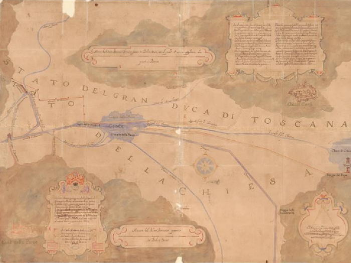

Cartografica
|
Partendo dalla pubblicazione online della Collezione I disegni e piante abbiamo realizzato un nuovo applicativo che consente ora il censimento e la ricerca in parallelo per luoghi e per full text di tutti i materiali grafici conservati nei nostri fondi: non solo dunque nelle Collezioni disegni, ma anche i numerosi disegni e piante conservati nei fondi notarili, estratti dal loro contesto archivistico per il restauro e conservati a parte per garantirne la corretta conservazione e una rigorosa custodia.
Ingegnerizzazione e classificazione topografica: Paolo Buonora, Enzo Pio Pignatiello; consulenza: Luisa Falchi; elaborazione: Stefano Tonazzi Collezione I disegni e piante La base di dati riprende l’inventario elaborato da Daniela Sinisi e dal gruppo di lavoro da lei diretto nel corso di molti anni, arrivato a pubblicazione nel CD allegato al volume Luoghi ritrovati. La Collezione I di disegni e mappe dell'Archivio di Stato di Roma (secoli XVI-XIX). Inventario, a cura di Daniela Sinisi, Roma, 2014. Consapevoli che oggi non si possa prescindere da sistemi di accesso digitale online per una diffusione del nostro lavoro che sia efficace e sostenibile nel tempo, abbiamo operato per trasporre le descrizioni, già pubblicate nel volume e nel CD, in pagine web rispettando al massimo l’autorialità originaria.. Inventario: Daniela Sinisi Elaborazione schede per l’inventario: Rachele Brumat, Margherita Desideri, Valentina D’Innocenzi, Daniela Martino, Monica Meccoli, Giovanna Montani, Francesco Russo, Luca Saletti Elaborazione schede per il restauro: Maria Cristina Dioguardi con la collaborazione di Luca Saletti e Francesco Russo Indici: Valentina D’Innocenzi e Monica Meccoli (nomi di persona); Rachele Brumat (nomi di luogo). Apparati iconografici: Rachele Brumat Abbreviazioni e Indici dei nomi e dei luoghi: Serena Dainotto Base di dati originaria: Salvatore Miele, Gemma Pusceddu. Reingegnerizzazione e classificazione topografica: Paolo Buonora; consulenza: Luisa Falchi; elaborazione: Stefano Tonazzi (marzo 2019) |

Carlo Maderno, Girolamo Rainaldi, Pianta del Concordato coi toscani sulle Chiane, 1605 (Archivio di Stato di Roma, Collezione I disegni e piante, cart. 17, foglio173). |
|